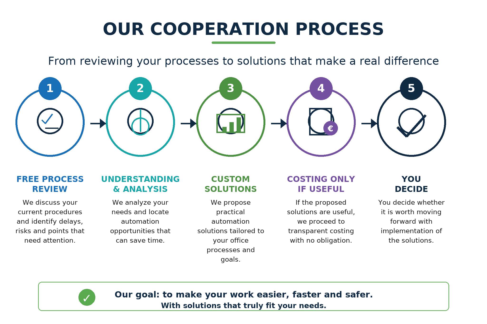

Our services
Our services are structured into three main categories, allowing us to cover the needs of a modern business in an integrated way.
Integrated support for every stage of the business
We combine accounting and tax expertise, advisory guidance and modern automation tools.
01
Accounting and Tax Services
Accounting, tax and payroll support for businesses and professionals.
- Bookkeeping for all categories.
- Payroll management and processing.
- Tax advice, tax planning and business formation.
Advisory Services
Support in organization, financial monitoring, reporting and business decision-making.
- Business planning, valuations and financial advisory.
- Financial modelling and monthly monitoring.
- Business CheckUp for roles, departments and processes.
Process Automation
Custom automations for recurring tasks, controls, emails, reports and internal workflows.
- Automations in Excel, emails, files and reports.
- Power BI dashboards for management information.
- Checklists, reminders and open-item monitoring.
